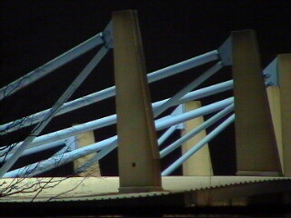
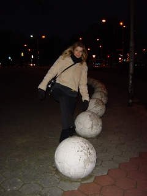
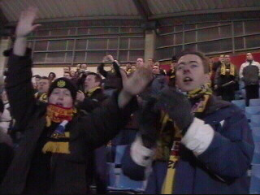
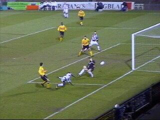
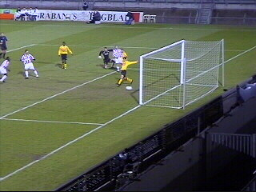
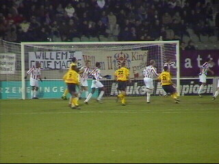
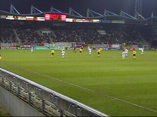
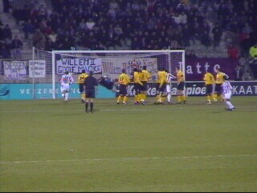
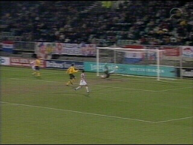
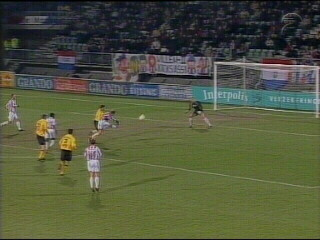

|
Willem II - Roda JC (5-0) 15 februari 2003 |

Al 10 seizoenen achterelkaar bleef Roda zonder
nederlaag in Tilburg.

We waren erg vroeg en gingen op
zoek
naar een supporterscafé. Maar
het enige
vertier dat we ontwaarden
was een
collectie veel te hard
opgepompte ballen.

300 Rodasupporters vol goede zin.

In de 20e min. kopt Ceesay tussen de benen van
Roorda 1-0 binnen.

In de 27e min. is het al 2-0 via Quinn.

Roda had wel kansen maar miste scherpte.

Zo schoot Anastasiou vrij voor goal de bal hoog
over.

De tweede helft is amper bezig. Landzaat neemt
een perfecte vrije trap: 3-0 (47).

Hierna werd het nog 4-0 (63) door Sjoekov.

En 5-0 (74) door Sjoekov........!
Roda verspeelt door dit beschamende resultaat
een riante klassering te meer doordat de directe
concurrenten allen wonnen.